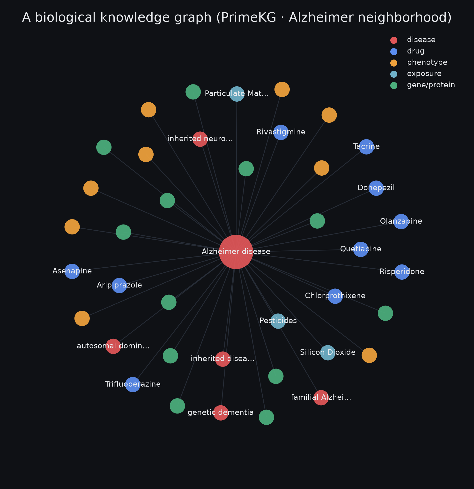
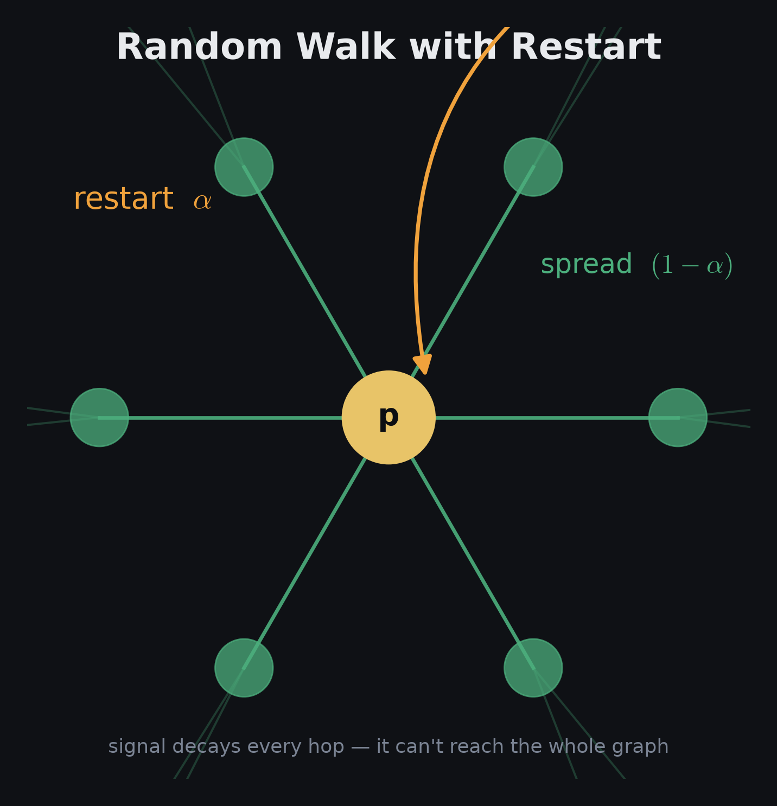
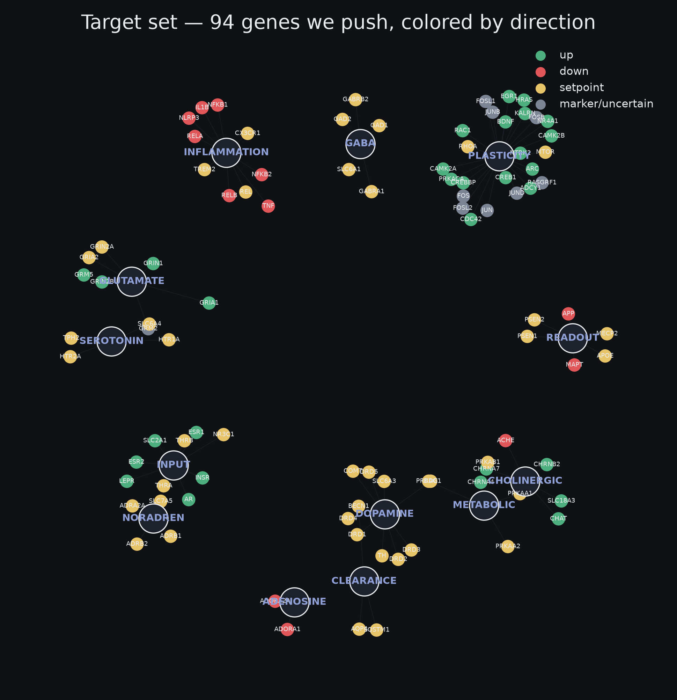
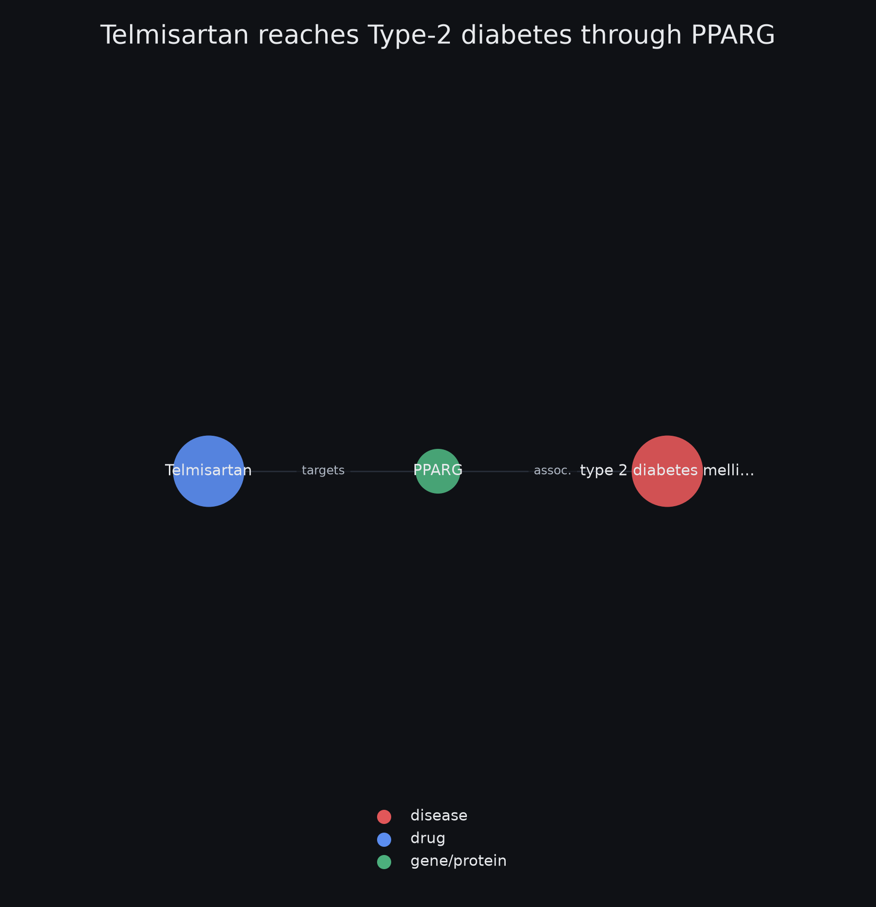

Optimizing the Brain for Learning — a Network-Control Approach
A biomedical knowledge graph cast as a signed, directed control system — propagation via random-walk-with-restart, structural controllability, and multi-objective optimization over node perturbations.
01Substrate
Base graph: PrimeKG, $|V|=129{,}375$, $|E|\approx4.05\times10^{6}$, 10 node types, 30 edge types (lineage: Hetionet/Rephetio hetnets for drug repurposing via metapath scoring).
Brain-scoping
Retain gene $v$ by tissue-expression enrichment over PrimeKG anatomy_protein_present edges $E_a$:
Layers (post-prune): intervention 70, input 15, readout 6, trap 2, bounded 1-hop expansion 187. Result: $N=280$, directed edges $3912$, signed $2871$ ($+{:}\,2253,\ -{:}\,618$), one strongly-connected component of $200$.


02Operator
Signed adjacency $W\in\{-1,0,+1\}^{N\times N}$, oriented so $(W x)_i$ is influx to $i$: $\;W_{ij}=\operatorname{sign}(j\to i)$. Out-strength $d^{\mathrm{out}}_j=\sum_i|W_{ij}|$. Column-normalize (Personalized-PageRank transition; $D_{\mathrm{out}}=\operatorname{diag}(d^{\mathrm{out}})$):
Spectral bound
$|\hat{W}|$ is column-stochastic ($\sum_i|\hat W_{ij}|=1$ on non-dangling $j$), so by Perron–Frobenius $\rho(\hat{W})\le\rho(|\hat{W}|)=1$ — guaranteeing convergence in §03. Measured on the substrate: $\rho(\hat W)=0.544$.
Why column, not symmetric
| scheme | operator | spectrum | damps |
|---|---|---|---|
| PageRank / random-walk (used) | $W D_{\mathrm{out}}^{-1}$ | $\rho\le1$ (col-stochastic) | sender / out-hubs |
| GCN symmetric | $D^{-1/2}\tilde W D^{-1/2}$ | $\lambda\in[-1,1]$ | both endpoints |
| row random-walk | $D_{\mathrm{in}}^{-1}W$ | $\rho\le1$ | receiver / in-hubs |
Column form splits a regulator's outgoing influence across its targets — the correct choice for a directed regulatory graph where promiscuity is an out-degree property.
03Propagation (RWR / APPNP)
Perturbation source $p\in\mathbb{R}^N$; restart probability $\alpha$. Iteration:
Fixed point $x^{*}$ solves $\bigl(I-(1-\alpha)\hat{W}\bigr)x^{*}=\alpha p$. Since $\rho\bigl((1-\alpha)\hat{W}\bigr)=(1-\alpha)\rho(\hat W)\le 1-\alpha<1$, the inverse exists and equals its Neumann series:
- Effective radius: geometric hop weight $(1-\alpha)^k$ ⇒ mean hops $\bar k=(1-\alpha)/\alpha\approx5.7$ at $\alpha=0.15$.
- Over-smoothing limit: $\alpha\to0\Rightarrow x^{*}\to$ leading eigenvector of $\hat W$ (source-independent). The $(1-\alpha)^k$ decay is the guard; diagnostic $\operatorname{Var}_i(x^{*}_i)\not\approx0$.
- Feedback: the 200-node SCC means $x^{*}$ is a steady state under recurrence, not a one-shot push — the resolvent is required.

04Controllability
Linearize the regulatory dynamics as an LTI system with input map $B\in\mathbb{R}^{N\times m}$ (which nodes we can drive): $\dot{x}=Wx+Bu$. Kalman: the pair $(W,B)$ is controllable iff
Structural controllability (Lin; Liu–Barabási)
Controllable for almost all edge weights iff the graph has no dilation and is spanned by the inputs. The minimum number of driver nodes is fixed by a maximum matching $M^{*}$ on the bipartite graph $\mathcal{B}(V^{+},V^{-})$ with an edge $j^{+}\!\to i^{-}$ for every $(j\to i)$:
Computed via Hopcroft–Karp in $O(|E|\sqrt{N})$. Denser wiring enlarges $M^{*}$ ⇒ fewer drivers: $\langle k\rangle\propto1/N_{D}$. Reachability of the druggable set $\mathcal{D}$: $R=\bigcup_{d\in\mathcal{D}}\operatorname{desc}(d)$.
Results
| quantity | value |
|---|---|
| $|\mathcal D|$ druggable inputs | 172 |
| reachable $|R|/N$ | 280 / 280 |
| min drivers $N_D$ (full control) | 81 |
| drivers that are druggable | 35 / 81 |
| feedback SCC | 200 |
Full arbitrary-state control fails ($35<81$). But target control (Gao et al. 2014) — steering only a readout subset $S\subsetneq V$ — needs $\le N_D$ inputs, and $R=V$ places every target inside the reachable set, so it is feasible. That is the regime the optimizer operates in.
05Target & objective
Target deviation vector $d\in\mathbb{R}^N$. Two shapes: monotone (attractor at a ceiling/floor) and set-point (inverted-U, interior attractor). Benefit = reduction in distance to the attractor:
A set-point already at baseline has $d_i=0\Rightarrow b_i=-|x^{*}_i|$ (any displacement is penalized). Aggregate benefit (confidence weight $w_i$; readouts $w_i=0$) and cost ($L_1$ effort + off-target collateral):
Curated target vector: 94 genes, $43$ set-point / $30$ up / $12$ down (set-points dominate — the inverted-U is the rule, not the exception).

06Uncertainty quantification
Uncertain inputs $\theta$ = confidence-weight intervals $\{w_i\}$ + sign-only edge magnitudes. Propagate by Monte-Carlo (GUM-S1): draw $\theta^{(m)}$, evaluate $Y^{(m)}=B(p;\theta^{(m)})$, report the order-statistic coverage interval instead of a point:
Attribute the band with Sobol indices (first-order and total-effect):
$\arg\max_i S_{T_i}$ is the input whose verification most shrinks the band — targeted rather than uniform effort.
07Optimization
Vector program over perturbations $p$: $\;\min_p\ \bigl(-B(p),\ C(p)\bigr)$; solution set = Pareto (non-dominated) front. Traced exactly by ε-constraint:
Weighted-sum scalarization $\max_p\,B(p)-\lambda C(p)$ is a supporting hyperplane of normal $(1,\lambda)$: it only recovers points on $\partial\,\mathrm{conv}$ of the front, so on a non-convex front (combinatorial knob choice + set-point objective) it provably misses the concave regions for every $\lambda$. ε-constraint and NSGA-II do not. The small state space makes the exact inner solve affordable.
08Validation
Test-driven (11 tests). Invariants asserted: $\rho(\hat W)\le1$; resolvent $=$ truncated Neumann series to $10^{-8}$; sign propagation on hand-built graphs; real-substrate integration. Sign check — perturb $+1$, compare $\operatorname{sign}(x^{*})$ against raw edge signs from the DB ($\alpha=0.15$, $\rho(\hat W)=0.544$):
| perturb | → target | edge | $x^{*}$ | check |
|---|---|---|---|---|
| CREB1 ↑ | BDNF | +1 | +0.0030 | ✓ |
| CREB1 ↑ | JUN | −1 | −0.0027 | ✓ flip |
| CREB1 ↑ | NTRK2 | +1→+1 | +0.0080 | ✓ net |
| GSK3B ↑ | CREB1 | −1 | −0.0041 | ✓ inhib |
| AKT1 ↑ | NFKB1 | +1→−1 | −0.0008 | ✓ net-flip |
NTRK2 ($+0.0080$) exceeds 1-hop
BDNF ($+0.0030$) because $d^{\mathrm{out}}(\text{CREB1})\approx40$ divides its per-target transmission,
while $d^{\mathrm{out}}(\text{BDNF})=1$ transmits undivided. Direct consequence of $\hat W=WD_{\mathrm{out}}^{-1}$.
09Groundedness & assumptions
- Rungs: brain-scoping (computed) $>$ edge sign/direction (curated causal DBs) $>$ edge magnitude (mostly sign-only) $>$ objective (hand-built target vector $d$).
- Linearization: $\hat W$ is the first-order Jacobian of the true nonlinear dynamics at baseline $x_0$; $x^{*}$ is valid for $\lVert x-x_0\rVert$ small. Large $\lVert p\rVert$ leaves the trust region (saturation, sign flips).
- Deliverable: a ranking of interventions and the trade-off front — ordinal, robust to linearization — not fold-change magnitudes, and not a protocol.